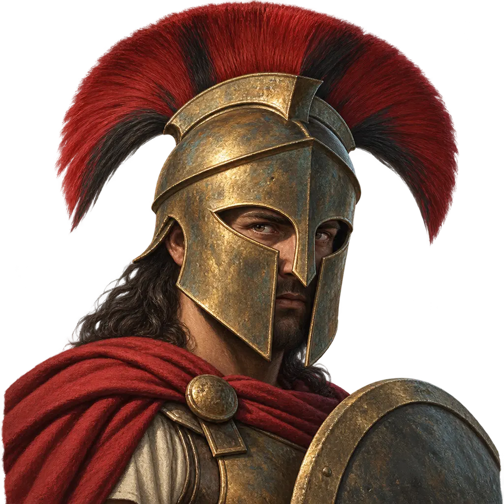
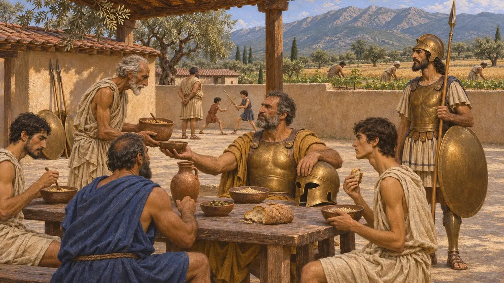
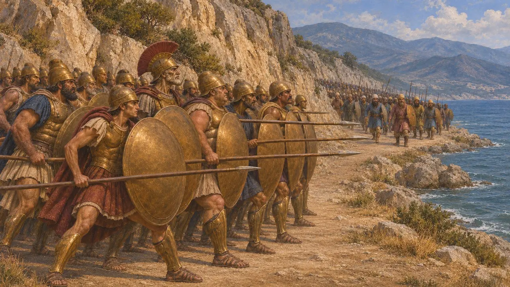
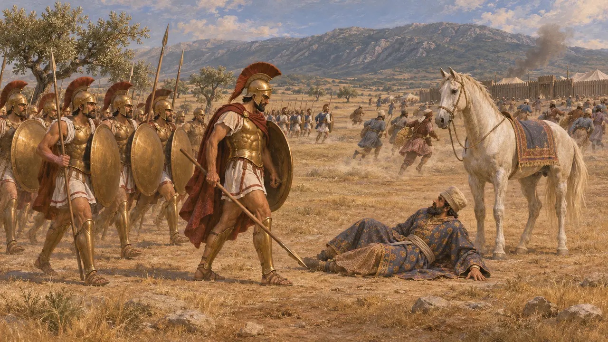
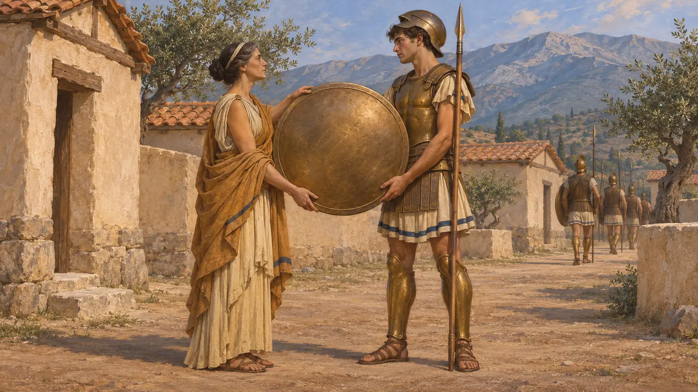
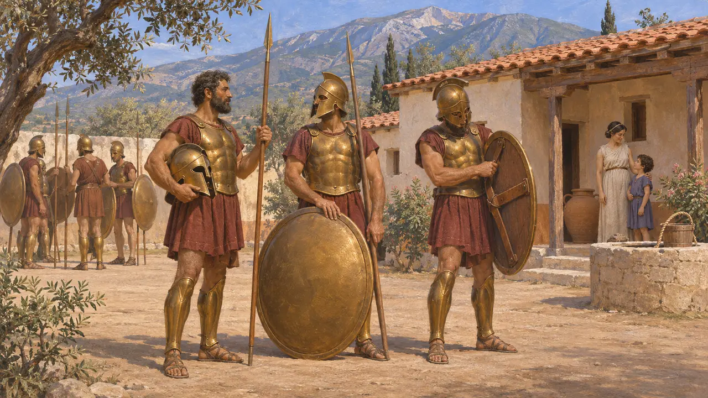

Enciclopedia › Soldados y naves

Soldados espartanos
Hoplitas de Esparta que se enfrentaron a los persas en las Termópilas y en Platea, 480-479 a. e. c.
En el juego: Nivel 10: Las Puertas Calientes
Los soldados espartanos eran los hoplitas de Esparta, la mayor potencia terrestre de Grecia, cuyos ciudadanos de pleno derecho, los espartiatas, vivían del trabajo de los ilotas y se entrenaban para la guerra desde niños. Formaron el núcleo de las fuerzas griegas que defendieron el paso de las Termópilas en el 480 a. e. c. y derrotaron al ejército de Mardonio en Platea en el 479 a. e. c. Casi todo lo que se sabe de ellos procede de autores griegos, ya que ningún documento persa los menciona.
En el juego: Los espartanos aparecen en los niveles de las Termópilas y Platea como Campeón espartano y Oficial espartano. Son etiquetas del juego: los ejércitos espartanos tenían oficiales, pero no un rango de campeón, y la batalla de Platea se libró en el 479 a. e. c.

Ciudadanos adiestrados para la guerra
Relato antiguoHeródoto y Jenofonte describen a los espartiatas como un pequeño cuerpo de ciudadanos de pleno derecho cuyas tierras cultivaban los hilotas, una población sometida de Laconia y Mesenia. Los muchachos recibían una educación estatal, y los hombres comían juntos en comedores comunes. A su lado combatían los periecos, hombres libres de las ciudades circundantes, mientras que los hilotas servían a menudo como asistentes o tropas ligeras.
Xenophon, Constitution of the Lacedaemonians; Herodotus 1.65, 9.28-29

La resistencia en las Termópilas
Relato antiguoHeródoto afirma que Leónidas llevó consigo a 300 espartiatas, todos escogidos entre hombres con hijos vivos, junto con varios miles de griegos más. Defendieron el desfiladero durante dos días y atrajeron a los persas con retiradas fingidas. Cuando Efialtes guio a Hidarnes por el sendero de la Anopea, Leónidas despidió a la mayoría de los aliados. Murió allí con los espartanos y los tespios, mientras que la mayoría de los tebanos que había retenido consigo se rindieron.
Herodotus 7.202-225, 7.233

La victoria de Platea
Relato antiguoHeródoto cuenta que Esparta envió 5.000 espartiatas, cada uno con siete ilotas, y 5.000 hoplitas periecos. Muchos historiadores aceptan sus cifras de hoplitas con más facilidad que su total de ilotas. Al mando de Pausanias, los espartanos ocuparon el ala derecha, frente a las propias tropas persas. Según Heródoto, un espartano llamado Arimnesto mató a Mardonio, tras lo cual la línea persa se quebró y los supervivientes huyeron a su campamento fortificado.
Herodotus 9.10-11, 9.28-31, 9.61-65

Máximas de los espartanos
Leyenda posteriorEn las colecciones de dichos reunidas por Plutarco casi seis siglos después, Leónidas responde a la exigencia de entregar las armas diciendo a los persas que vengan a tomarlas. En otro, una madre espartana dice a su hijo que vuelva a casa con su escudo o sobre él. Son relatos morales de una época posterior y no prueban lo que se dijo en el 480 a. e. c.
Plutarch, Sayings of Spartans; Plutarch, Sayings of Spartan Women

Hasta qué punto eran excepcionales los espartanos
En disputaLos historiadores modernos hablan de un espejismo espartano: una imagen de guerreros austeros e invencibles forjada por sus admiradores en Atenas y por autores posteriores. Algunos, como Stephen Hodkinson, sostienen que la riqueza, la vida familiar y el adiestramiento espartanos eran menos excepcionales de lo que afirman las fuentes, mientras que otros defienden un sistema militar verdaderamente singular. Como los registros persas guardan silencio, la versión persa de estas batallas solo nos llega a través de autores griegos, Heródoto ante todo.
F. Ollier, Le mirage spartiate, 1933; S. Hodkinson, Property and Wealth in Classical Sparta, 2000
Fuentes
- Herodotus, Histories, books 7 and 9
- Xenophon, Constitution of the Lacedaemonians
- P. Cartledge, Sparta and Lakonia, 1979
- S. Hodkinson, Property and Wealth in Classical Sparta, 2000
- P. Cartledge, Thermopylae, 2006
- Plutarch, Sayings of Spartans